Configure the plugin
The plugin can be configured through a preference page that can be accessed using Archi's Edit / Preferences menu:
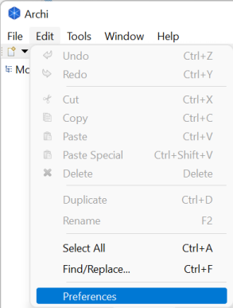
If the plugin has been successfully installed, a new Database plugin entry appears in Archi's preferences window:
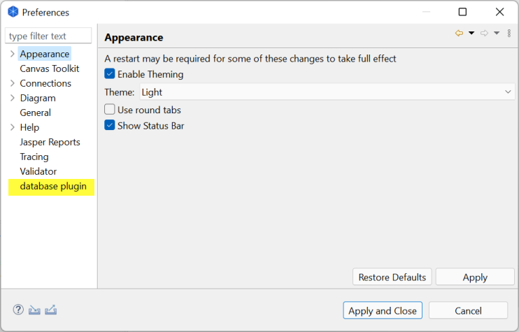
The database plugin preferences are organized in 3 tabs:
Behaviour tab
The behaviour tab is the default tab that is displayed when accessing the database plugin preferences:
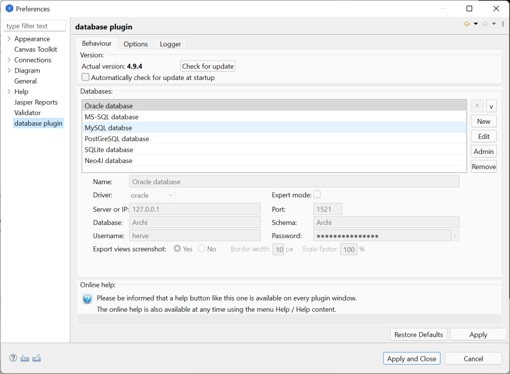
Version
This box shows up the actual plugin's version:
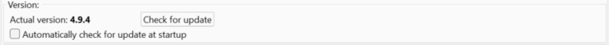
In addition, the Check for update button allows to manually check if you've got the latest version of the plugin:
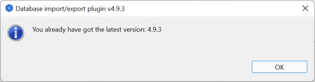
Should a new version is found on Github, the plugin asks if it may be downloaded and installed:
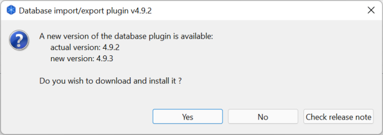
The Check release note button allows to open a web explorer and show the plugin release notes from Github (https://github.com/archi-contribs/database-plugin/blob/master/v2/release_note%20versions%204.9.md).
The Yes button downloads the latest version of the plugin from GitHub and install it to Archi, as if it was installed manually following Archi plugin installation mechanism.
While the plugin is downloaded, he following popup window is displayed:
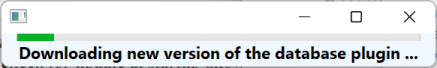
Once the latest version is downloaded and installed, Archi needs to be restarted to switch between the old plugin version to the new version. You may postpone Archi restart, but the new plugin version won't be activated until this restart.
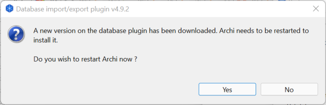
When Archi restarts, the plugin confirms that the new version is operational:
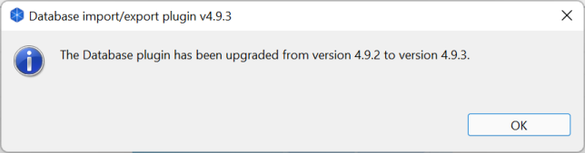
It is possible to automate this new version checking each time Archi starts by checking the Automatically check for update at startup check box.
If Archi fails to access Internet because you are behind a corporate proxy, you need to manually edit the Archi.ini configuration file (please refer to Archi documentation to get more information about the Archi.ini file):
Databases
This section displays the list with all the databases that have been defined in the plugin. If a database is selected, its detail is displayed.
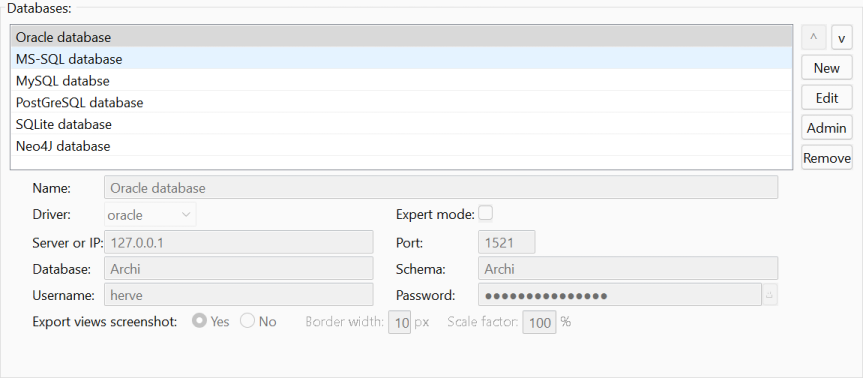
You may declare several databases. When activating a database plugin action (import from or export to a database, compare a model component with a database, ...), the plugin will allow to choose the database against which the action will be done.
It's up to you to organize your databases depending your own organization. It may be:
- one production and one or several test databases
- one shared databases across the whole architecture team and another one personal
- one database containing public models and another one containing more sensitive models
- ...
The following actions may be done at this stage:
- ^: Move up a database
- v: Move down a database
- New: Declare a new database
- Edit: Edit information about a database
- Admin: Run administrative tasks on a database
- Remove: Remove a database definition from the plugin (the database itself stay untouched)
Declare a new database
Clicking on the New button allows to declare a new database in the plugin.
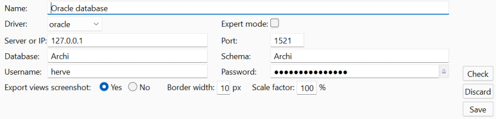
The database information fields become visible and editable. Most of the databases share the same information:
- Name: Name of your database. This is a pure text label that has got no meaning to the plugin. It may contain spaces and special characters.
- Driver: At this stage, the plugin supports the following drivers for SQL databases:
- MS-SQL Server
- Microsoft JDBC Driver 8.2 for SQL Server: mssql-jdbc-8.2.2.jre11.jar
- Supports SQL Server 2017 & 2019 database and Azure SQL databases (as per Microsoft compatibility matrice)
It also supports the following driver for NoSQL database:
- Expert mode: When selected, it allows to manually edit the JDBC connection string in case some specific parameters need to be used.
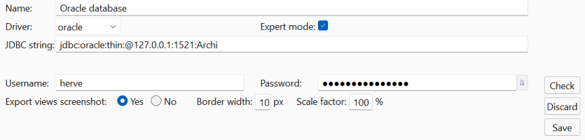
- Server or IP: Server where the database stands (may be a DNS entry or an IP address)
- Port: TCP port on which the database is listening
- Database: Database name
- Schema: Schema name
- Username: Username used to connect to the database (leave empty to use your current Windows credentials to connect to a MS-SQL database)
- Password: Password used to connect to the database (leave empty to use your current Windows credentials to connect to a MS-SQL database). The small lock button allows to switch between a readable and a hidden password.
- Export views screenshots: If Yes is selected, the plugin generates a screenshot of all the views during the export process and exports those screenshots to the database. Please note that activate this option will slow down the export process and consume more disk space, but they may be useful depending on your needs. Two options are then available:
- Border width: number of pixels of the screenshot border, 0 means no border, defaults to 10 pixels
- Scale factor: allows to increase or decrease the size of the screenshots, defaults to 100 percent.
Regarding SQLite databases, the information to provide is quite specific:
- File: Filename containing the database.
- Browse: Opens a file explorer
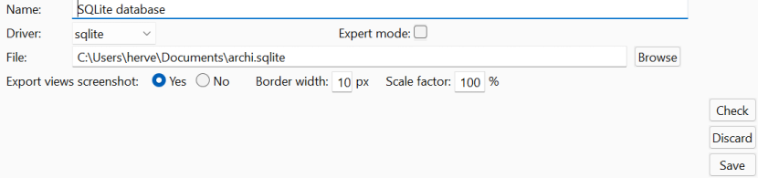
Neo4J databases also require some specific options:
- Export graph mode: Archimate allows to have relationships from/to another relationship, which is not allowed in Neo4J graphs.
- Native mode: In this mode, Archimate relationships are exported as Neo4J relationships (so relationships to/from relationships are not exported to the Neo4J graph). You may prefer this mode in case you do not use relationships to/from relationships in your models.
- Extended mode: In this mode, Archimate relationships are exported as Neo4J nodes (so relationships to/from relationships are exported to the Neo4J graph, but graph analysis is a bit less straight forward). You may prefer this mode if you use relationships to/from relationships in your models.
- Empty database: Allows to empty the Neo4J database before exporting your model.
- Empty database before every export: The database is emptied before a model is exported, thus the database contains a single graph corresponding to your model after the export which eases a model analysis.
- Leave database content: The database content is left untouched before the model export.
- Relationships type:Specifies how relationships are created in the Neo4J graph:
- Use unique "relationships" type:
- Use typed relationships:
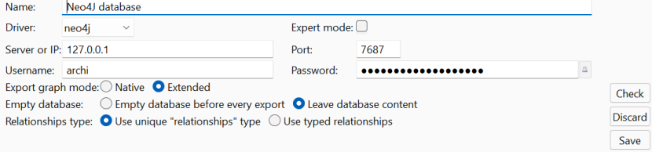
After the information has been filled-in, you may click on:
- Check: the plugin tries to connect to the database and reports any error if any
- Discard: discards the database declaration
- Save: validates the database declaration
Editing information about a database
Selecting a database displays its configuration under the list. The Edit button allows to edit its configuration.
After the information has been filled-in, you may click on:
- Check: the plugin tries to connect to the database and reports any error if any
- Discard: discards the database information update
- Save: validates the database information update
Changing databases order
The ^ and v buttons allows to move up and down the databases definitions in the list to order them.
The database order is meaningless for the plugin, except for the first database which becomes the default database.
This means that even if you can choose the database for all the actions done by the plugin (import, export, check component versions, ...), this default database will be pre-selected.
Initializing a database
Each time the plugin connects to a database, it checks if it has been initialized, i.e. if the required tables already exist. If it is not the case, it asks if it should initialize the database:
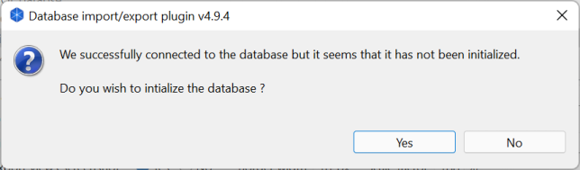
Please click on the Yes button to initialize the database. You may refer to the database structure page to have more details about the tables that will be created.
A new popup window is then opened with the status of the database initialization:
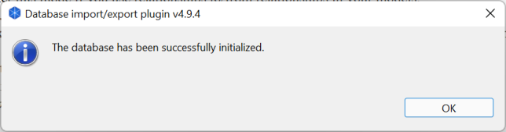
Online help
This section is a reminder that an online help is available and can be accesses either by Archi Help / Help content menu, or by a click on the help button which is presented as a blue interrogation mark on all key plugin windows:
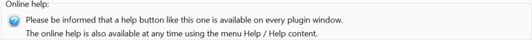
Options tab
The Options tab shows up the plugin options:
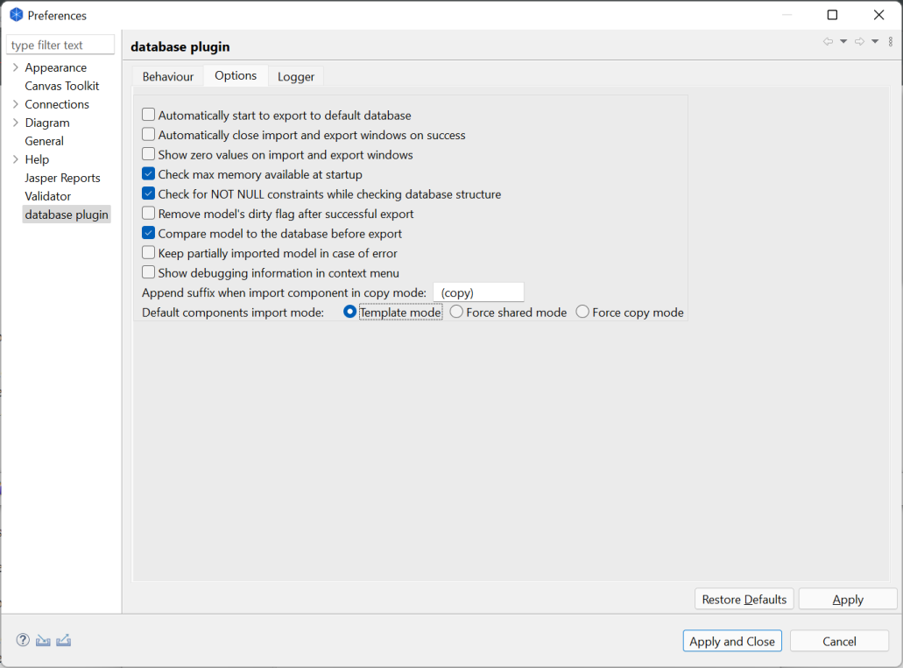
Available options are:
- Automatically start to export to the default database
This option changes the plugin behaviour when a model export is requested:
- The plugin shows up the export window and automatically starts to export the model to the default database.
- The plugin shows up the export window and waits for the user to click on the Export button (default). The default database is pre-selected but it is possible to change the database before the export.
- Automatically close import and export windows on success
This option changes the plugin behaviour when a model import or a model export is requested:
- The import window / export window is automatically closed upon success.
- The import window / export window stays opened and waits for the user to click on the Close button (default). The user can then review statistics about the number of components that have been imported from or exported to the database.
- Show zero values on import and export windows
The option changes the way zero values are displayed on the import and export windows:
- A zero value in shown.
- Zero values are shown as empty boxes (default).
- Check max memory available at startup
As the plugin requires memory to work properly, this option allows to check if the Java JVM running Archi has got enough memory (at least 1 GB). This option was mainly useful for older version of Archi (and older version of Java JVM) but the memory should not be an issue with current version of Archi.
- The plugin displays an error message at startup when the Java JVM memory is less than 1 GB (default).
- The plugin won't check for the available memory during its initialization.
- Check for NOT NULL constraints while checking database structure
This option adds a NOT NULL constraints check when the plugin performs a database structure check:
- The plugin checks for NOT NULL constraints (default).
- The plugin does not check for NOT NULL constraints.
- Remove model's dirty flag after successful export
This option changes the plugin behaviour after a model has been successfully exported to a database:
- The model's dirty flag is removed so the model will be considered as saved by Archi (Archi will not ask to save the model to an Archimate file when it is closed).
- The model's dirty flag is not removed, even after a successful export, so a popup will be displayed when Archi is closed, asking to save the model to an Archimate file.
- Compare model to the database before export
This option changes the plugin behaviour when a model export is requested:
- The plugin compares the model components to the database content and shows up the result in the export window (default). This slows down a bit the export process but the user knows what the export process will export to the database.
- The plugin does not compare the model to the database before the user clicks on the "Export". This quicks up a bit the export process, but the user does not know in advance what the plugin will export to the database.
- Keep partially imported model in case of error
This option changes the plugin behaviour when an issue is raised during a model import:
- In case of an error occurs during a model import, the plugin shows up an error message but keeps the partially imported model in Archi.
- The plugin does not keep the partially imported model (default).
Please note that this option is for debugging purpose. Activate it only if you know what you're doing as once the import windows is closed, the error status is discard and Archi won't know that the model is inconsistent. Saving the model in an Archimate file or exporting it back to the database can lead to loose components in the model. Use this option at your own risks.
- Show debugging information in context menu
- Adds a context menu entry to access debugging information about selected Archimate component (ID, version, checksum, database status, ...).
- The debug context menu entry will be hidden (default).
- Append suffix when import component in copy mode
- It is possible to change the suffix that is added to components' name when the are imported in copy mode from the database (please refer to the import model page for more information).
- Default components import mode
- Template mode (default): Defines the template mode as the default import mode.
- Force shared mode: Defines the shared mode as the default import mode.
- Force copy mode: Defines the copy mode as the default import mode.
Please refer to the import model page for more information.
Logger tab
The logger tab allows to specify a log file and the level of information to store in this log file. 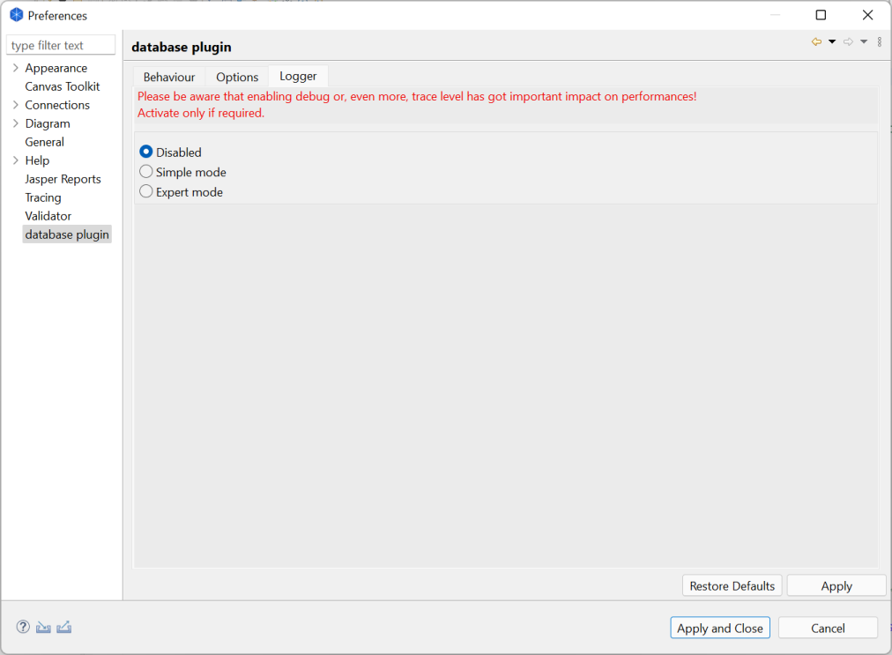
The plugin logs can be:
- Disabled
- Configured using simple mode
- Configured using expert mode
Please note that activating the logger in debug or trace mode may have some performance impact on the export and import processes of the plugin due to the level of information to collect and log. Nevertheless, it will not have any impact in any other Archi workload.
Disabled
When disabled, the logger does not generate any log nor error message.
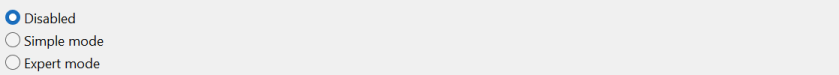
Simple mode
The simple mode allows to configure the logger in a very simple way:
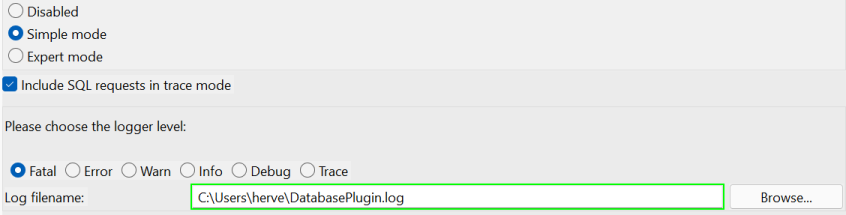
The information to provide is:
- Logger level: Please choose the level of details you wish to see in the log file.
- Log filename: Please fill in the filename in which the logger will append the log information. The filename field is highlighted with a green border if the log filename exists and with a red border if the log filename does not exist.
You may as well select the Include SQL requests in trace mode should you wish to include the SQL requests sent to the database in your log file. Please note that those SQL requests are logged if the logger is configured in trace level only.
Expert mode
The expert mode allows to manually configure the logger configuration:
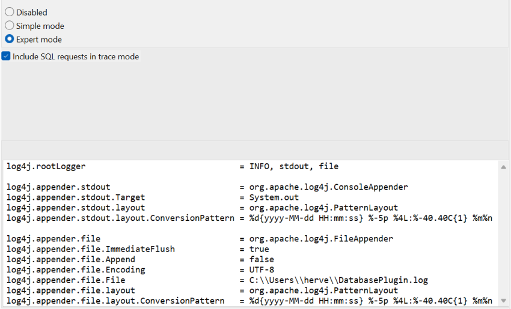
The logger is managed through the Log4J 1.2 library and you may fill-in your own configuration in the text editor. Please note that any error in this configuration may avoid the logger to work correctly.
You may as well select the Include SQL requests in trace mode should you wish to include the SQL requests sent to the database in your log file. Please note that those SQL requests are logged if the logger is configured in trace level only.
In expert mode, you are provided with a simple text editor and you may configure the Log4j logger manually (on Windows, it is necessary to double the backslashes).
This mode is very powerful, as you may specify several log files, with different level of information. You may also change the lines format.
This option must be reserved to people who have knowledge about Log4j as a bad configuration can stop the plugin from working correctly. In all cases, it is always possible to restore a safe and working configuration using the "Restore defaults" button.